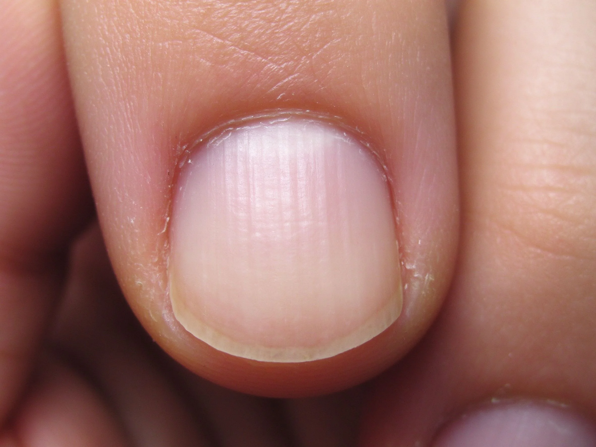

美甲甲板與甲床是什麼？入門入門攻略
你以為指甲是一片？其實是「甲板＋甲床＋游離緣」三層，搞懂它才知道怎麼養。
甲板與甲床原理與辨識重點：美甲師不說的甲板是露出的硬層
把指甲想像成一片小小的磁磚：上面那層硬殼是「甲板」，是一層層硬角質堆出來的薄板，會被磨、會被撞、會分層；下面貼著肉、透著粉紅的是「甲床」，布滿微血管，所以看起來紅潤；最前端沒有肉貼著的那段白色，叫「游離緣」，就是你剪指甲剪掉的部份。甲板厚、甲床長，指甲看起來就健康修長。
誰適合做甲板與甲床？觀察指甲健康對號入座
想搞懂「為什麼我指甲容易斷、為什麼甲床這麼短」的人；也是每個美甲師開案前一定要搞清楚的第一課。
甲板與甲床美甲施作步驟：甲板／甲床／游離緣
看自己的指甲：粉紅貼肉＝甲床，白色懸空＝游離緣。保養目標是別把甲板磨太薄、靠留長慢慢把甲床往前養。日常少用指甲當開瓶器、敲鍵盤用指腹，洗完手擦指緣油。
甲板與甲床優缺點分析：美甲持久度與傷甲評估
| 優點 | 說明 |
|---|---|
| 看懂構造才知道哪裡能磨、哪裡不能動；保養也能對症下藥，不會亂買東西。 | 是通用流派的招牌，入門就能上手 |
| 缺點 | 說明 |
| 甲板一旦被磨薄或燒傷，要長回來得好幾個月，急不得；甲床退縮更是要按年算。 | 前置與別把游離緣剪到貼肉，那會讓甲床越縮越短；也別貪磨把甲面磨到發白發霧，那已經是磨傷的訊號。沒顧好會打折 |

甲板與甲床新手雷區：甲床是粉紅部分與常見錯誤
注意：別把游離緣剪到貼肉，那會讓甲床越縮越短；也別貪磨把甲面磨到發白發霧，那已經是磨傷的訊號。
甲板與甲床和其他美甲做法的差別比較
跟「指甲完整構造」不同：這篇聚焦甲板和甲床這兩層怎麼運作、怎麼保養；甲母質生長原理另開一篇談。
甲板與甲床美甲常見問題 FAQ
Q：甲床可以變長嗎？ A：可以。靠「留長游離緣＋定期補強＋指緣保養」，甲床會慢慢往前移，但要半年以上才看得出來，不能急。
Q：指甲有直紋是生病了嗎？ A：輕微直紋是老化自然現象；如果是明顯凹溝、一條一條橫溝，或顏色突然變黑，才要擔心是不是營養或生病。